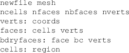

Input and output mesh file formats
GRUMMP has the capability to input and output two-dimensional meshes
in user-defined formats. To take advantage of this feature, the user
must create a file called user2d.template in the directory
GRUMMP/src/IO_generator. This file is processed by the programs
in2d_gen and out2d_gen to produce C++ functions
which, respectively, read and write two-dimensional meshes with the
format described in user2d.template. These functions are
added to the GRUMMP two-dimensional mesh manipulation library, libGR_2D,
the next time this library is remade. A default template file, default2d.template,
is used if user2d.template does not exist. Step-by-step,
then, the process for setting up user-defined file formats for two-dimensional
meshes is:
- Edit GRUMMP/src/IO_generator/user2d.template.
- Return to the GRUMMP directory.
- Type make.
When data is read by the GRUMMP executables, conversion of the input
connectivity data to an internal format is performed automatically.
There are two valid ways to specify connectivity. First, the data
file can provide both face-cell and face-vertex connectivity. Second,
cell-vertex connectivity can be provided for the interior of the mesh
along with boundary condition and vertex data for each boundary face.
In either case, any redundant data is verified to ensure consistency.
The remainder of this section describes the format of user2d.template.
On systems that have flex, in2d_gen and out2d_gen
are not case sensitive; upper and lower case may be mixed indiscriminately.
Systems using lex require lower case, because some lex
implementations can not produce case insensitive parsers. configure
will warn you if your system seems to be using lex.
The following description includes tokens in mixed case for readability.
A “^” preceding a token indicates that it must
begin a new line in the template file. “Whitespace” refers to
any number of consecutive spaces or tabs within a line.
- [Token] Description
- [^newfile] Specifies the name of in input/output
file to open. This token must be followed by whitespace and a string
giving the extension to append to the basefilename
(given on the command line). The file name extension is terminated
by whitespace or the end of the line; if the extension is terminated
by whitespace, anything following that whitespace is ignored.
Note that the first line of the template file must always
be a newfile line.
- [^Fortran] This directive indicates that
numbering of mesh entities should begin with 1 instead of 0. If Fortran
appears alone on a line of the file, vertices, cells, faces, and boundary
faces are all treated this way. If Fortran is followed by
one or more of verts, cells, faces, or
bfaces, then only the entities specified are numbered in
this way. A file may contain more than one Fortran line;
the effects of multiple lines are cumulative. Note that only
data read after a Fortran
directive is affected by that directive. For this reason,
it is recommended that all Fortran declarations be placed
at the beginning of the template file (just after the initial file
name).
- [NVerts]
- [NFaces]
- [NCells]
- [NBFaces]
- [NIntBFaces]
These indicate that the number of vertices, faces, cells, or boundary
faces in the mesh should be read or written. In each case, the token
can be followed by whitespace and an integer to specify the width
of the field used to read/write the number of entities. Use of field
widths for input is not recommended, as this introduces the possibility
of misreading data.
- [^verts:] Read/write data for each vertex
in the mesh. There are four data specifications for vertex data.
- [index] Read/write the number of the vertex within the
mesh, starting with 0 and running to NVerts-1. An integer
field width can be specified.
- [x]
- [y]
- [z] Coordinates of the vertex. Input/output field width
W and number of significant figures S can be specified
by following the token with whitespace and W.S.
- [coords] Read/write x, y and (in 3D)
z (in that order). Field width and significant figures can
not be specified
- [^faces:] Read/write data for each face
in the mesh. There are seven data specifications for face data.
- [index] Read/write the number of the face within the mesh,
starting with 0 and running to NFaces-1. An integer field
width can be specified.
- [cellA]
- [cellB] The cells incident on the face. See Figure 3.2
for orientation of cells and vertices with respect to an edge. Note
that faces on the boundary will read/write the boundary condition
(negating the integer BC type) in place of the missing cell. An integer
field width can be specified.
- [cells] Read/write cellA and cellB,
in that order. Field width can not be specified.
- [vertA]
- [vertB] The vertices at the ends of the face. Again, see
Figure 3.2 for orientation of cells and vertices
with respect to an edge. An integer field width can be specified.
- [verts] Read/write vertA and vertB,
in that order. Field width can not be specified.
Figure 3.2:
Orientation of vertices and cells as assumed by GRUMMP I/O routines.
|
|
- [^cells:] Read/write data for each cell
in the mesh. There are nine data specifications for cell data.
- [index] Read/write the number of the cell within the mesh,
starting with 0 and running to NCells-1. An integer field
width can be specified.
- [faceA]
- [faceB]
- [faceC] The faces bounding the cell. The order of faces
is arbitrary (that is, the faces should not be assumed to be ordered
cyclically). An integer field width can be specified.
- [faces] Read/write faceA, faceB and faceC,
in that order. Field width can not be specified.
- [vertA]
- [vertB]
- [vertC] The vertices of the cell. These are labeled cyclically.
Cell A in Figure 3.2 gives an example. Field width
can be specified.
- [verts] Read/write vertA, vertB, and
vertC, in that order. Field width can not be specified.
- [region] Read/write the region tag for a cell.
- [^bdryfaces:]
Read/write data for each boundary face in the mesh. There are six
boundary specifications for boundary face data.
- [index] Read/write the number of the boundary face within
the mesh, starting with 0 and running to NBFaces-1. An integer
field width can be specified.
- [BC] Integer indicating boundary condition. Must be greater
than 0. Field width can be specified.
- [face] Face index for the face corresponding to the boundary
face. Field width can be specified.
- [vertA]
- [vertB] Vertex indices for the boundary face. Orientation
is shown in Figure 3.3. Field width can be
specified.
- [verts] Read/write vertA and vertB,
in that order. Field width can not be specified.
- [^intbdryfaces:]
Read/write data for each boundary face in the mesh. There are six
boundary specifications for boundary face data.
- [index] Read/write the number of the boundary face within
the mesh, starting with 0 and running to NBFaces-1. An integer
field width can be specified.
- [BC] Integer indicating boundary condition. Must be greater
than 0. Field width can be specified.
- [faceA]
- [faceB]
- [faces] Face indices for the faces corresponding to the
internal boundary face; the same restrictions and privileges apply
as for cells.
- [vertA]
- [vertB] Vertex indices for the boundary face. Orientation
is as shown in Figure 3.2. Field width can be specified.
- [verts] Read/write vertA and vertB,
in that order. Field width can not be specified.
- [^#] At the beginning of the line, denotes
a comment. Ignored when generating input routines. Comments in the
template are echoed to the output file unless they begin with ##,
in which case they are ignored.
Figure 3.3:
Orientation of boundary data in two dimensions.
|
|
- [text in quotes] Echoed literally into the output file, with
one exception: a \ in the template
file becomes a in the output file. In the
input file, the text that is put into the output file is required
to appear. For example, the template line
verts: x x y
y \x and y\
produces the following output for a vertex at (0.5, 0.7):
x 0.5 y 0.7 x and y
Also, any input line compatible with this template will have the same
non-numeric text as the output example just given.
- [other text] This text is also echoed literally to the output
file. For example, TecPlot requires descriptive information for each
mesh zone, which for triangular meshes can be provided by including
ZONE N=nverts, E=ncells, F=FEPOINT, ET=TRIANGLE
at the appropriate place in the template file (see IO_generator/TECPLOT2D.template).
Caveats:
- Text containing quotes must be treated as shown above.
- A # at the beginning of a line must be quoted or it will be treated
as a comment.
- Numbers following keywords should be quoted if they are not meant
to specify a field width.
An example template file (in fact, the default two-dimensional template,
default2d.template) is shown in Figure 3.4.
Figure 3.4:
Example template file for 2D I/O.
 |
Three-dimensional I/O templates are quite similar to two-dimensional
templates, conceptually. Obviously, in this case there are three spatial
coordinates, x, y and z. Also, faces, boundary faces, and internal
boundary faces can now specify a vertC; cells can specify
a vertD, a faceC and a faceD.
The orientation of cells and vertices around a face is such that,
if the right hand rule is used to trace vertices A, B, and C, then
one's thumb points towards cell B, as shown in Figure 3.5.
For a boundary face, the orientation of the vertices is such that
the interior of the domain is where cell B is in Figure 3.5.
Figure 3.5:
Orientation of cells and vertices for a three-dimensional face.
|
|
The default three-dimensional template (default3d.template)
differs from its two-dimensional counterpart only in that the file
suffix given is vmesh instead of mesh.
In both two and three dimensions, an alternative template file (mr[23]d.template)
is also provided for output of meshes with internal boundaries; note
that coarsen[23]d and meshopt[23]d can not
currently read multi-domain files.